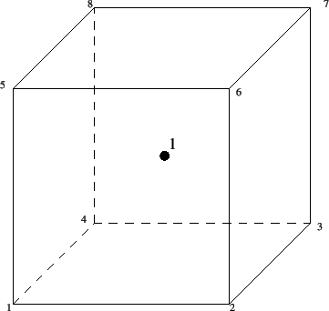

The C3D8R element is a general purpose linear brick element, with reduced integration (1 integration point). The shape functions are the same as for the C3D8 element and can be found in [41]. The node numbering follows the convention of Figure 57 and the integration point is shown in Fig 59.
Figure 59:
1x1x1 integration point scheme in hexahedral elements
|  |
Due to the reduced integration, the locking phenomena observed in the C3D8 element do not show. However, the element exhibits other shortcomings:
- The element tends to be not stiff enough in bending.
- Stresses, strains.. are most accurate in the integration points. The integration point of the C3D8R element is located in the middle of the element. Thus, small elements are required to capture a stress concentration at the boundary of a structure.
- There are 12 spurious zero energy modes leading to massive hourglassing:
this means that the correct solution is superposed by arbitrarily large
displacements corresponding to the zero energy modes. Thus, the
displacements are completely wrong. Since the zero energy modes do no lead
to any stresses, the stress field is still correct. In practice, the C3D8R
element is not very useful without hourglass control. Starting with version
2.3 hourglass control is automatically activated for this element (using the
theory in [24]), thus
alleviating this issue.